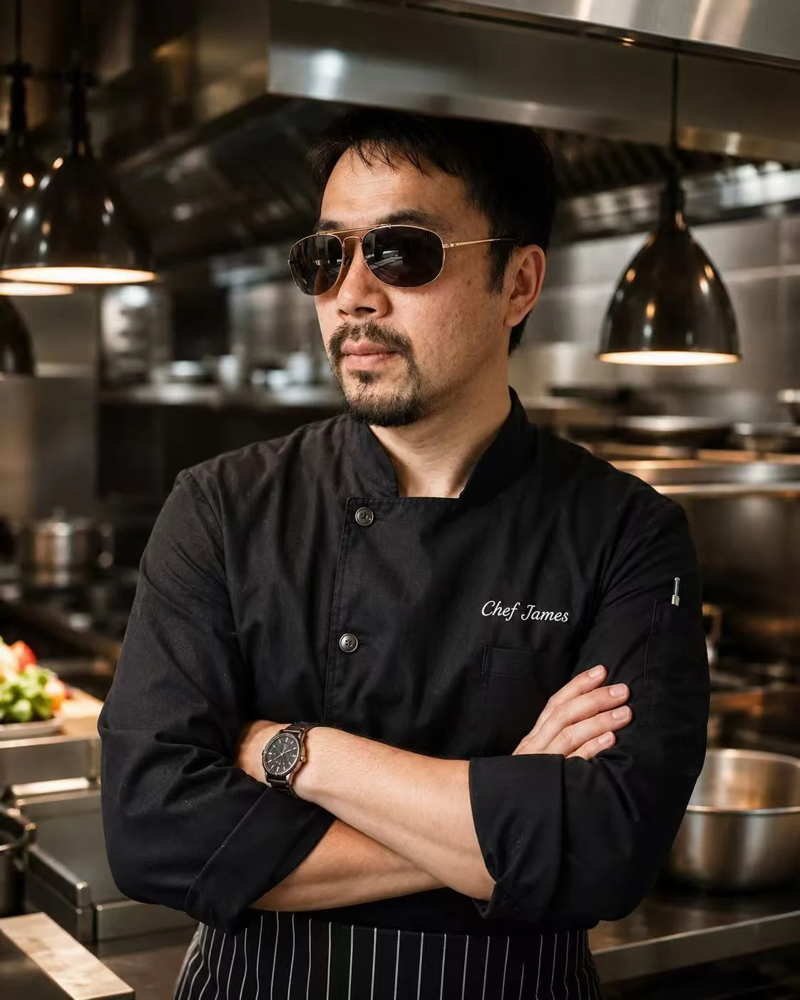

Included
1 soup base, large veggie set, 1 meat, and 1 rice or noodle side.
Japanese & Taiwanese Mini Hotpot · 一人一锅
Calgary hotpot for one, with fresh soup bases, Taiwanese snacks, rice and noodle bowls, and milk tea made for sharing.

Hotpot set
1 soup base, large veggie set, 1 meat, and 1 rice or noodle side.
AAA beef, lamb, pork, or chicken. Extra meat is $3.69.
Rice, instant noodles, glass noodles, ramen, udon, or braised pork rice +$1.
Meet Our Chef
對於 Chef James 來說，一鍋好湯不僅是一道料理，更是一份溫暖人心的記憶。

James 出生於臺灣，從小在充滿煙火氣息的傳統家庭中長大。兒時廚房裡飄散的湯香、夜市裡熱騰騰的小吃，以及家人圍坐共享美食的幸福時光，都成為他日後踏入餐飲行業最深刻的啟發。
擁有超過 30 年餐飲經驗的 James，曾在臺灣及海外多家知名餐廳擔任主廚與餐飲顧問，專注研究亞洲風味料理、火鍋湯底與傳統家常菜。他始終相信，真正打動人心的美食，不是複雜的技巧，而是對食材的尊重與對品質的堅持。
來到加拿大後，James 希望把臺灣人記憶中的溫暖味道帶給更多家庭。因此，他將臺灣經典風味與日式精緻飲食文化融合，打造出屬於 Centre Street Japanese Hotpot 的獨特特色。
從每天熬製的湯底，到精心挑選的肉品、新鮮蔬菜以及臺灣特色小吃，每一個細節都凝聚著 James 對料理的熱愛與堅持。
“最好的火鍋，不只是讓人吃飽，而是讓人想起家。”
今天，當您來到 Centre Street Japanese Hotpot，品嘗的不僅是一頓火鍋，更是一位擁有三十多年經驗的臺灣主廚，傾注心血與故事所呈現的美味旅程。
For Chef James, a good pot of soup is more than a dish. It is a warm memory that brings people home.
Born in Taiwan and raised in a traditional family kitchen, James grew up surrounded by simmering broths, lively night-market snacks, and the joy of sharing food around the table. Those memories became the heart of his culinary journey.
With more than 30 years of restaurant experience, James has worked as a chef and food consultant in Taiwan and abroad, focusing on Asian cuisine, hotpot soup bases, and comforting homestyle dishes. He believes truly memorable food comes from respect for ingredients and a steady commitment to quality.
After coming to Canada, James set out to share the warmth of Taiwanese flavors with more families. At Centre Street Japanese Hotpot, he blends classic Taiwanese taste with the refinement of Japanese dining, from daily prepared soup bases to carefully selected meats, fresh vegetables, and Taiwanese snacks.
Every visit is more than a hotpot meal. It is a flavorful journey shaped by a Taiwanese chef with decades of experience, dedication, and story.
Choose your broth

Sukiyaki

Tom Yum Kung

Spicy Hotpot
Signature rice & noodles
Milk tea & drinks

Appetizers

Signature
Signature Taiwanese Popcorn Chicken · $9.89
$9.89
$8.89
$9.89
$6.89
$9.89
$7.89
$8.89
$8.89
Original menu


Visit us
Mon-Fri 17:00-22:30
Sat-Sun 12:00-22:30
Hotpot · Milk Tea · Light Meals · Snacks · Family Dining